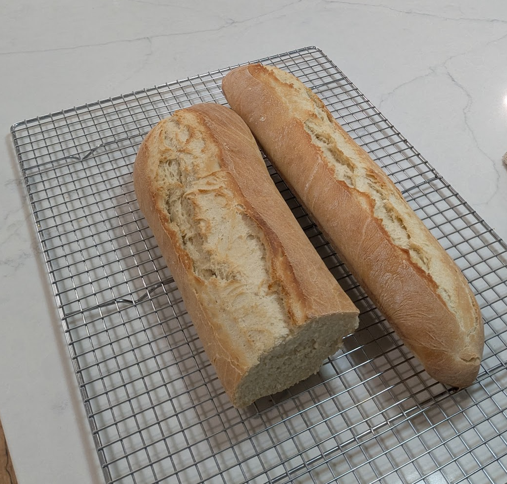

Ingredients
Directions
Chef's Notes
Baking Timeline
| Step | Direction | Time (min) | Notes |
|---|---|---|---|
| 1 | Proof yeast | 10 | Water, sugar, yeast + prep other ingredients |
| 2 | Knead | 10 | Flour, salt, oil |
| 3 | Proof #1 | 90 | Oiled covered bowl |
| 4 | Divide and Shape | 10 | |
| 5 | Proof #2 | 60 | Preheat oven to 400° @30 min |
| 6 | Bake | 25 | Add pan of boiling water to oven |
| 7 | Cool and Slice | 10 |